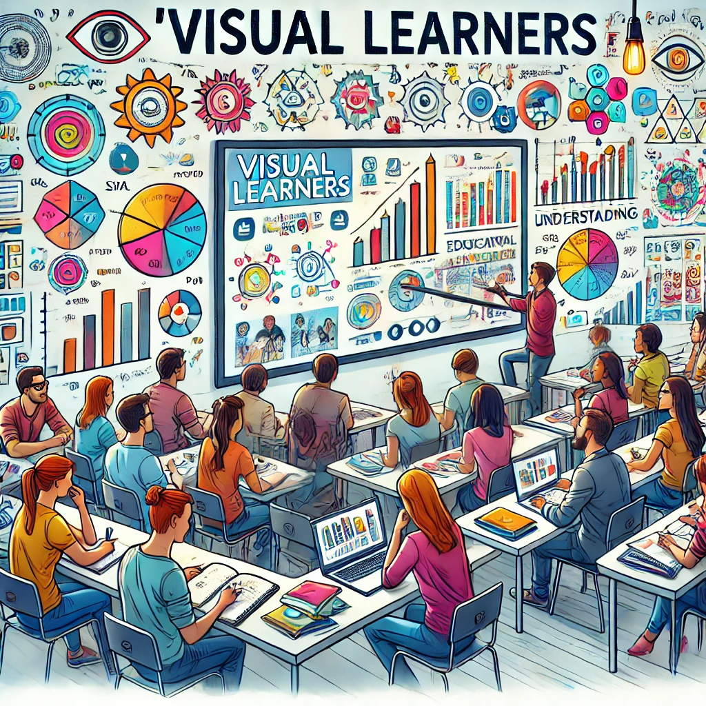
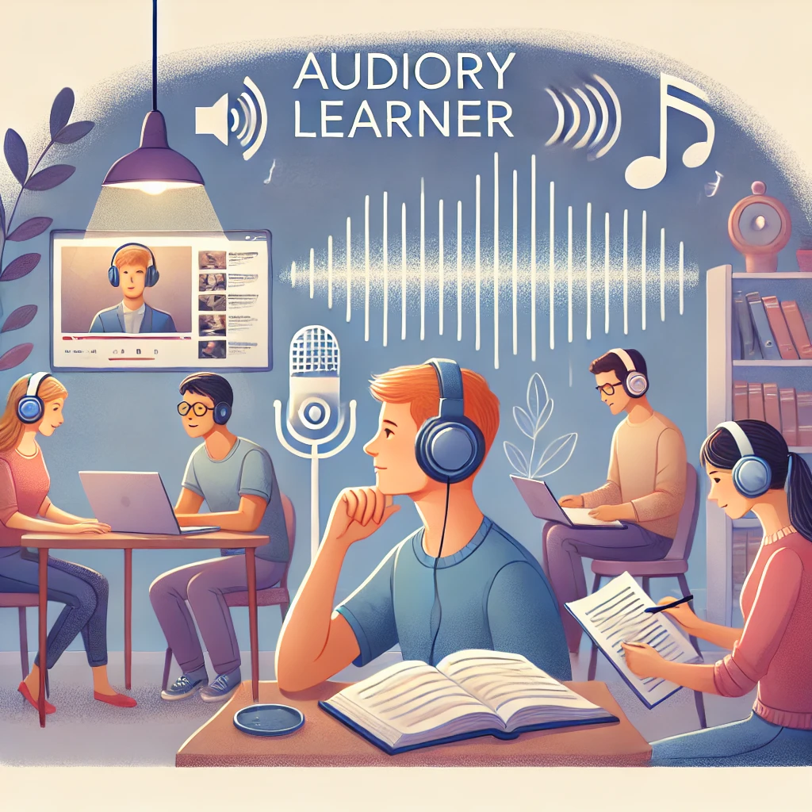

Learning Styles

Visual Learners: Those who learn best with images, diagrams, and visual aids can refer to the first channel.

Auditory Learners: Those who learn effectively by hearing information can refer to the second channel.
Read/Write Learners: Those who excel with text-based information and note-taking can refer to the third channel.
Logical Learners: Those who thrive on reasoning and structured explanations can refer to the fourth channel.

Solitary Learners: Those who prefer self-study and reflection can refer to the fifth channel.